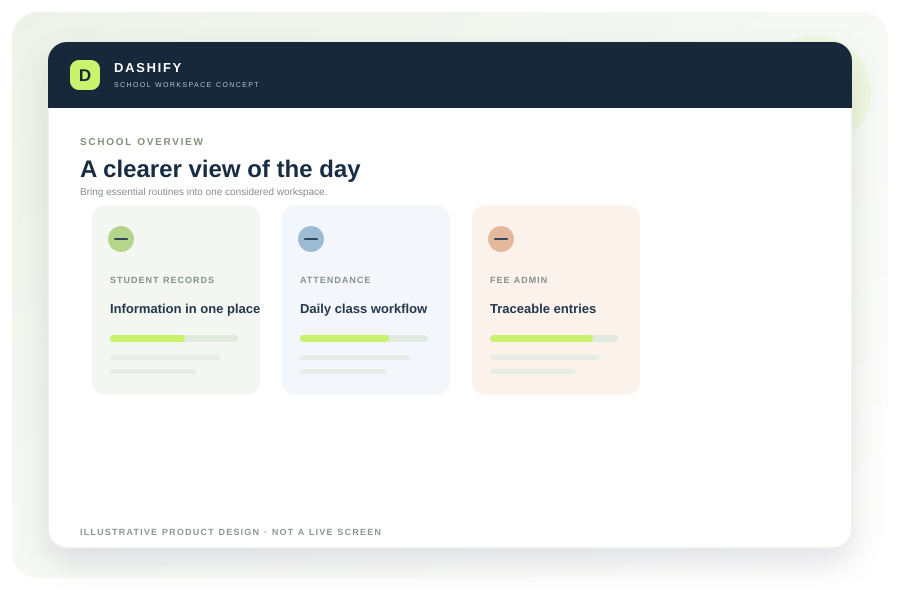

Student records
A structured place for core student details, class and section information, and authorised record updates.
DASHIFY is being developed as a practical school operations platform for private schools — bringing essential administrative work into a clearer, more connected experience.

Illustrative interface concept — not a live or released product.
A school is more than a timetable.
Admissions, student information, attendance, fees and communication all demand time and coordination. When these routines live in separate places, it can be harder for teams to see what needs attention.
DASHIFY is being shaped around these everyday tasks. The goal is not to add another layer of complexity — it is to make core school work easier to organise, follow and improve.
The initial pilot scope is focused on a useful operational foundation. Detailed workflows will be validated with participating schools before release.
A structured place for core student details, class and section information, and authorised record updates.
A consistent daily attendance workflow with a clearer view for teachers and school administrators.
Organise fee heads, due information and collection records with a more traceable process.
A central workflow for preparing and organising important school announcements.
These are product priorities under development, not a statement that these features are currently available.
A proposed workspace that brings key routines into a clearer visual flow. Screens shown are illustrative design concepts, not a released product.
Explore the platform concept →A school platform should make each person's responsibilities clearer, while keeping information access appropriate to their role.
Bring key operational information into a more organised view for principals and administrators.
Support practical workflows such as class lists and attendance, with less repeated administration.
Organise fee structures, payment records and follow-up information in a consistent process.
We are speaking with school leaders and administrators to understand real workflows and assess fit for an early pilot.